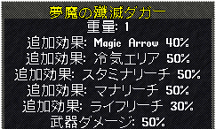

| 最大プロパティ | |
| Dullcopper | 2 |
| Shadow | 2 |
| Copper | 3 |
| Bronze | 4 |
| Gold | 4 |
| Agapite | 5 |
| Verite | 5 |
| Valorite | 6 |
| 最大プロパティ | |
| Spined | 2 |
| Horned | 4 |
| Barbed | 6 |
| 最大プロパティ | |
| Oak | 2 |
| Ash | 4 |
| Yew | 5 |
| Heartwood | 6 |
| プロパティ | 装備系統 | プロパティ表示値または強度 |
| STR/DEX/INT | 武器、鎧、盾 | 1>2>3>4>[5] |
| HP | 武器 | 1>2>3>[4] |
| 鎧、盾 | 1>2>3>4>5>[6]>[7] | |
| Stam/Mana | 武器、盾 | 1>2>3>4>[5] |
| 鎧 | 2>4>6>8>[10] | |
| HP/Stam/Mana回復 | 武器 | 3>6>[9] |
| 鎧、盾 | 1>2>3>[4] | |
| HP変換 | 鎧、盾 | 3>6>9>12>[15] |
| Mana変換 | 盾 | 5>10>15>20>[25]>[30] |
| 詠唱集中 | 鎧 | 1>2>[3] |
| 秘薬コスト | 鎧 | -5>-10>-15>-20>[-25] |
| マナコスト | 武器、盾 | -1>-2>-3>-4>[-5] |
| 鎧 | -2>-4>-6>-8>[-10] | |
| 武器ダメージ | 武器 | 10>20>30>40>50>[60]>[70] |
| 盾 | 5>10>15>20>25>[30]>[35] | |
| 速度 | 武器 | 5>10>15>20>25>30>[35]>[40] |
| 盾 | 5>[10] | |
| 命中 | 武器 | 5>10>15>[20] |
| 武器(投擲) | 5>10>15>20>25>[30]>[35] | |
| 鎧、盾 | 1>2>3>4>[5] | |
| 回避 | 武器、盾 | 5>10>15>[20] |
| 武器(投擲) | 5>10>15>20>25>[30]>[35] | |
| 鎧 | 1>2>3>4>[5] | |
| 追加魔法 | 武器 | 10>20>30>40>50>[60]>[70] |
| エリア攻撃 | 武器 | 10>20>30>40>50>[60]>[70] |
| 命中低下 | 武器 | 10>20>30>40>50>[60]>[70] |
| 回避低下 | 武器 | 10>20>30>40>50>[60]>[70] |
| ライフリーチ | 武器 | 5>10>15>20>25>[30]>[35]（強度） |
| スタミナリーチ | 武器 | 10>20>30>40>50>[60]>[70] |
| マナリーチ | 武器 | 5>10>15>20>25>[30]>[35]（強度） |
| スタミナダウン | 武器 | 10>20>30>40>50>[60]>[70] |
| マナダウン | 武器 | 10>20>30>40>50>[60]>[70] |
| 遠距離ボーナス | 投擲 | 5>10>・・・40>[45]>[50] |
| 魔道武器 | 武器 | -25>-20>[-15] |
| 属性抵抗 | 武器、鎧、盾 | 5>10>15>[20] |
| 物理ダメージ反射 | 両手武器、鎧、盾 | 5>10>15>[20] |
| 自己修復 | 武器、鎧、盾 | 1>2>3>4>5>[6]>[7] |
| ポーション強化 | 武器 | 5>10>[15] |
| 鎧 | 1>2>[3] | |
| 幸運 | 武器、鎧、盾 | 10>20>・・・>100 >[110]>・・・>[140]>[150] |
| 投擲 | 10>20>・・・>120 >[130]>・・・>[160]>[170] | |
| 耐久性 | 武器、鎧、盾 | 10>20>・・・>100 >[110]>・・・>[140]>[150] |
| 装備条件 | 武器、鎧、盾 | -10>-20>・・・>-70 >[-80]>[-90]>[-100] |
| 属性攻撃 | 武器 | 物理属性＋他1属性、10％刻みで変化する
10>・・・>70>[80]>[90]>[100] |
| 詠唱可 | 武器、盾 | |
| 瞑想可 | 鎧 | |
| 好戦 | 武器 | |
| 麻痺カウンター | 両手武器、盾 |
Runic hammerを使い、2ワード固定の改良
| Dullcopper runic |
Shadow runic |
| Copper runic |
Bronze runic |
| Gold runic |
Agapite runic |
| Verite runic |
Valorite runic  |
Valorite runicを使い、2ワード固定で特性値重視の改良
「上質」グループで2プロパティ失われて、「夢魔」グループに1プロパティ追加された例
2ワード保証の場合、ワード毎に最低でも1プロパティ確保される
Dullcopper runicを使い、1ワード保証で特性値重視の改良
第2ワード側のプロパティが失われやすい傾向があり、ワード関連プロパティが0となる場合もある。
Bronze runicを使い、2ワード保証の改良
同じグループのワードが2回使われています。仕様なのかどうかは不明。予算ポイント不足で詠唱可は入らなかった？
Bronze runicを使い、2ワード保証の改良
該当プロパティのないワードが第2ワード使われています。仕様なのかどうかは不明。
その影響か、第1ワードのプロパティが4つ入っています。
Bronze runicを使い、2ワード保証の改良
該当プロパティのないワードが第1ワード使われています。仕様なのかどうかは不明。
この場合は、第1ワードのプロパティおよび予算ポイント枠は破棄され、第2ワードのプロパティが2つだけとなっています。
Valorite runicを使い、1ワード固定(見切り／護身)＋1ワード保証、パワフル、特性重視、上限増強の改良
さらにDullcopperで強化
防具の抵抗値は、品質効果込みの抵抗値から加算され、強化により抵抗値を上げることも可能。
画像は品質効果込みで（14/4/5/6/4）から物理とエネが20増加、さらにDullcopperの効果で物理抵抗が6増加した。
Oak runicを使い、1ワード固定(流血の／殲滅)、パワフル、特性重視、上限増強の改良
さらにHeartwoodで強化
改良で付加された命中＋5とHeartwoodの命中＋5が加算された。